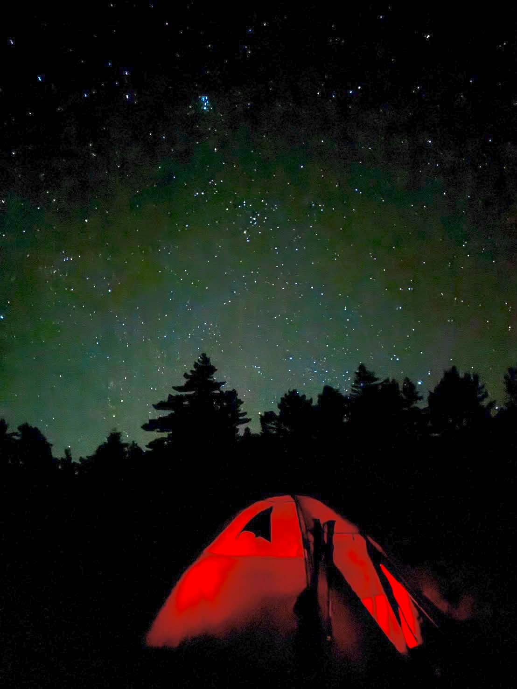
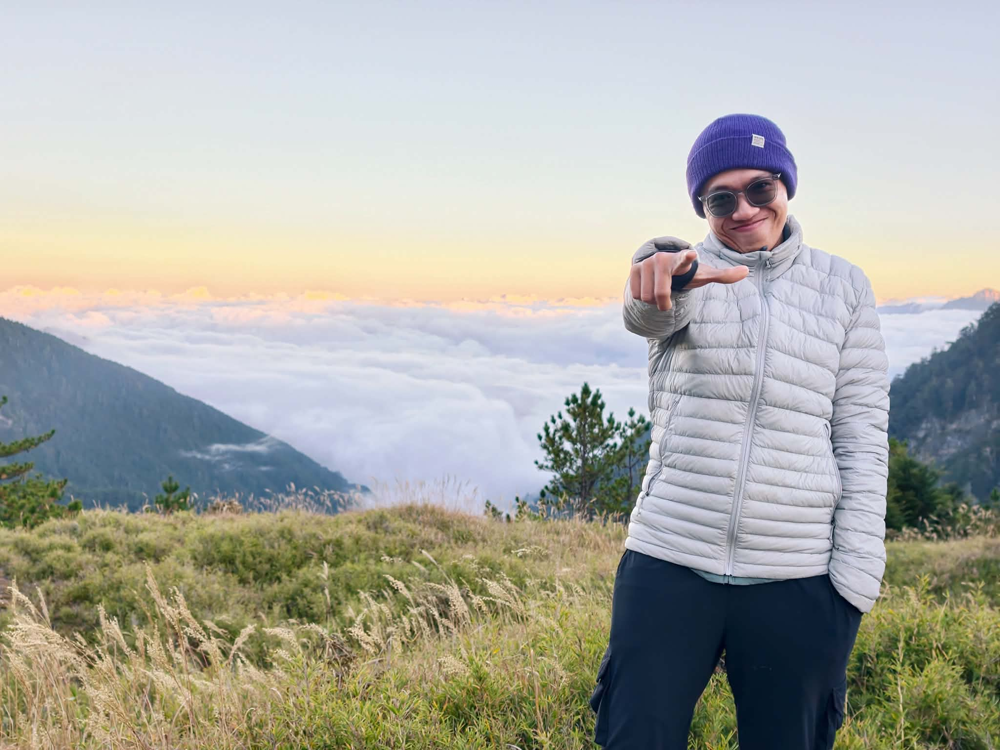
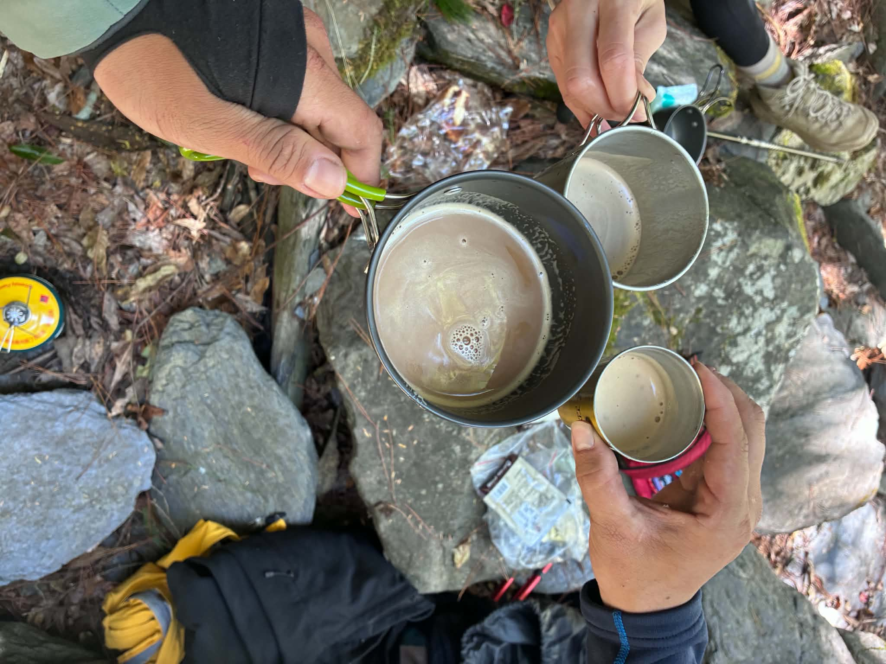

探索三大裝備系統

睡眠系統
帳篷・睡袋・睡墊
讓每一個山林夜晚，都能安心休息。

保暖系統
排汗層・保暖層・防風雨層
面對多變的高山氣候，做好準備。

炊煮系統
爐具・鍋具・燃料
在山林裡，享受一頓溫暖的餐食。
01｜睡眠系統
登山不只是行走，良好的睡眠品質， 也是維持體力與恢復的重要關鍵。 睡眠系統主要由帳篷、睡袋與睡墊組成。
帳篷｜山林中的臨時住所
帳篷是登山睡眠系統的重要裝備， 能提供遮風避雨的空間，讓登山者在營地安心休息。
選購時應考慮重量、抗風能力、防水性能、 內部空間與搭設便利性。
高山露營尤其需要留意營地風勢， 並確實固定營釘與營繩。
睡袋｜高山夜晚的保暖核心
睡袋的主要功能，是減少睡眠時的熱量散失， 幫助登山者在低溫環境中維持舒適的體溫。
選購時應優先參考舒適溫度（Comfort）、 填充材質、重量及收納體積， 而非只看最低極限溫度。
羽絨睡袋通常具有良好的重量與保暖效率， 但必須特別注意防潮，避免受潮後保暖能力下降。
睡墊｜隔絕地面寒氣的關鍵
睡墊不只是為了增加睡眠舒適度， 更重要的是隔絕地面傳導的熱量散失。 即使使用保暖睡袋，缺乏適當睡墊仍可能感到寒冷。
選購時應注意 R 值（熱阻值）， 數值越高，代表睡墊的隔熱能力通常越好。 高山低溫環境應優先考慮足夠的隔熱性能。
常見類型包括泡棉睡墊與充氣睡墊。 泡棉睡墊耐用、不怕刺破； 充氣睡墊則通常具有較好的收納性與舒適度， 但需留意破損風險。
02｜保暖系統
高山氣溫與天氣變化快速。 透過分層穿著，能依照行進、 休息及營地活動調整體感溫度。
排汗層
幫助汗水離開皮膚表面， 減少衣物潮濕造成的不適與失溫風險。
保暖層
例如刷毛衣、化纖保暖衣或羽絨衣。 依照活動量與環境溫度選擇。
防風雨層
阻擋風雨對身體造成的影響。 選擇時應注意防水性、 防風能力與透氣設計。
03｜炊煮系統
在山林中享用熱食， 不僅能補充能量， 也是登山生活中令人期待的時刻。 炊煮系統需要兼顧重量、效率與安全。
爐具
依照使用環境、炊煮需求與 隊伍人數，選擇適合的登山爐具。
鍋具
考慮容量、重量、 導熱效率及收納便利性， 避免攜帶不必要的裝備。
燃料
依照天數、人數、 氣溫與預計煮水量估算燃料， 並預留適當備用量。